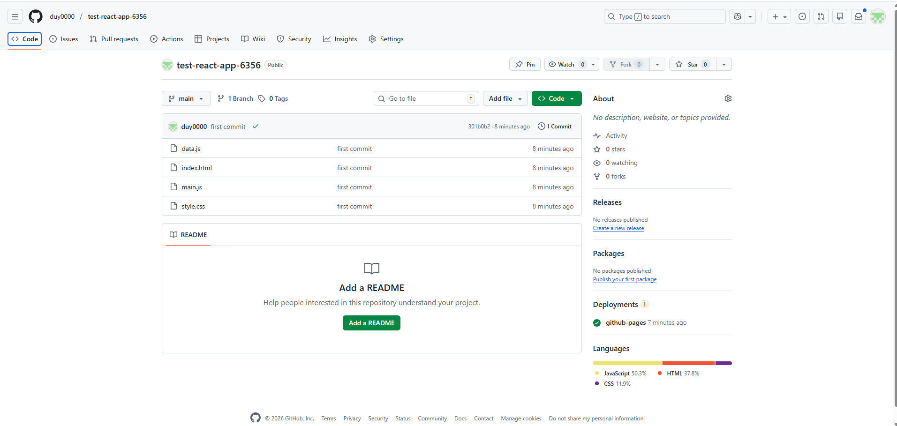
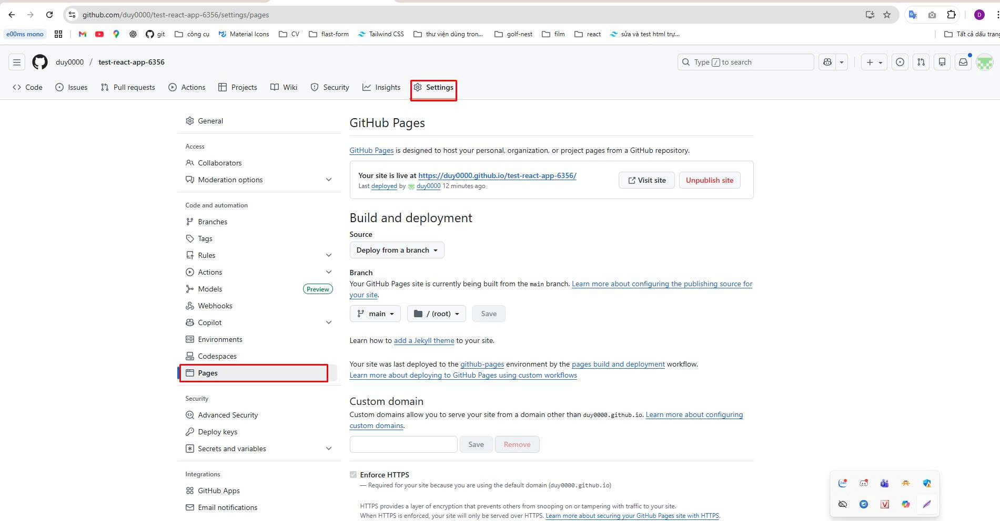
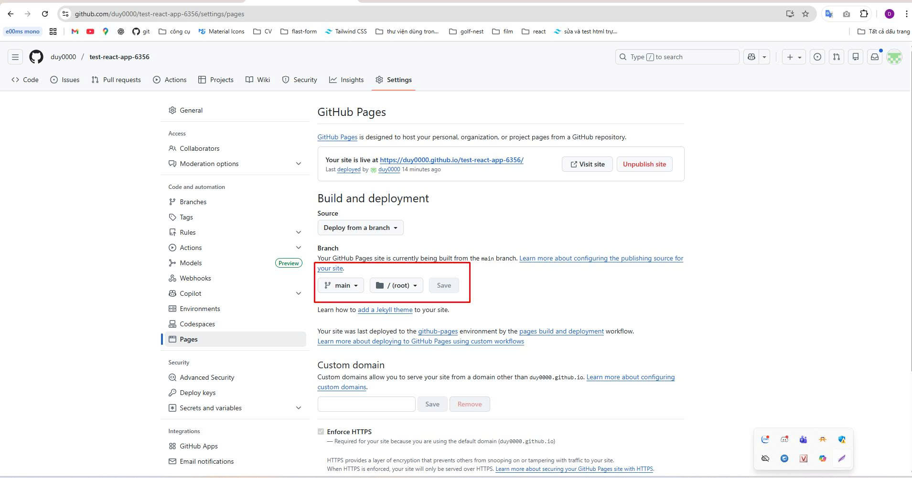
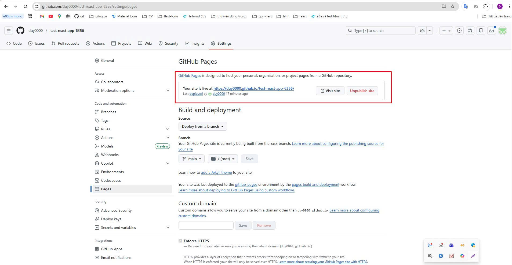
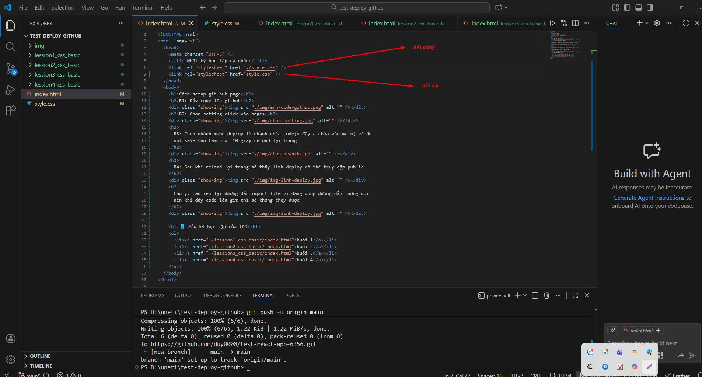
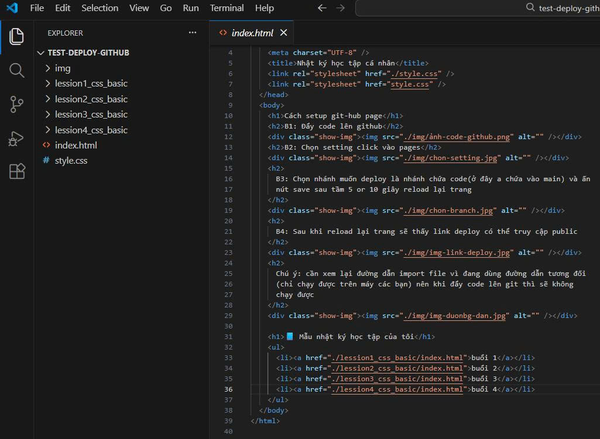

Cách setup git-hub page
B1: Đẩy code lên github

B2: Chọn setting click vào pages

B3: Chọn nhánh muốn deploy là nhánh chứa code(ở đây a chứa vào main) và ấn
nút save sau tầm 5 or 10 giây reload lại trang

B4: Sau khi reload lại trang sẽ thấy link deploy có thể truy cập public

Chú ý:
Cần xem lại đường dẫn import file vì đang dùng đường dẫn tương đối (chỉ
chạy được trên máy các bạn) nên khi đẩy code lên git thì sẽ không chạy
được

Nên cấu trúc folder như này thì khi đẩy code lên github thì github sẽ tự
deploy lại code giúp mình

📘 Mẫu nhật ký học tập của tôi